Oracle数据库
1、数据库
就是存储数据的仓库，该仓库位于计算机上，占用的是计算机的磁盘空间。数据库有自己特有的结构去管理这些数据集合，比如oracle采用的就是著名的关系型结构。
2、数据库管理系统-DBMS，oracle扩展sql
DBMS是数据库的核心，是数据库的管理软件系统。
3、 数据库系统DBS，oracle扩展sql
数据库系统：由数据库，数据库管理系统DBMS（及开发工具），应用系统和数据库管理员（DBA）共同组成。
4、 数据字典（内置系统表），oracle扩展sql
oracle中除了用户自己建立的表，表中存储的数据，用户自己建立的索引、视图、数据库等，这些都是用户自己建立的，用户会经常操作这些数据。
除了这些，oracle会自动保存一些数据库的系统信息，如数据表的名称，数据库的名称，用户和权限等信息也会进行保存，这些保存都是在数据字典中。
数据字典：由数据库管理系统自动生成并维护的一组数据表和视图。俗称系统表。
oracle的数据字典（系统表）
注意：查看下面的dba_*系统表的时候，用户需要被赋予权限，要不就是只能dba用户去查
dba_users：保存所有数据库用户信息
dba_segments：表段信息
dba_extents：数据区信息
dba_objects：数据库对象信息
dba_tablespaces：数据库表空间信息
dba_data_files：非临时数据库表空间文件配置信息
dba_directories：查询目录directorys
dba_temp_files：临时表空间文件配置信息
dba_rollback_segs：回滚段信息
dba_ts_quotas：用户表空间配额信息
dba_free_space：数据库空闲表空间信息
dba_profiles：数据库用户资源限制信息
dba_tables：数据库的所有表信息，可以带条件查询指定数据库用户的;指定用户名称必须大写
dba_sys_privs：用户的系统权限信息
dba_tab_privs：用户具有的对象权限信息
dba_col_privs：用户具有的列对象权限信息
dba_role_privs：用户具有的角色信息
dba_audit_trail：审计跟踪记录信息
dba_stmt_audit_opts：审计设置信息
dba_audit_object：对象审计结果信息
dba_audit_session：会话审计结果信息
dba_indexes：用户模式的索引信息
user_objects：用户对象信息（实例：查看某表的创建时间，注意表名必须大写 select created from user_objects where object_name = 'TABLE_CAT'）
user_source：数据库用户的所有资源对象信息
user_segments：用户的表段信息
user_tables：当前登录用户的表对象信息
user_tab_columns：用户的表列信息
user_constraints：用户的对象约束信息
user_sys_privs：当前用户的系统权限信息
user_tab_privs：当前用户的对象权限信息
user_col_privs：当前用户的表列权限信息
user_role_privs ：当前用户的角色权限信息
user_indexes：用户的索引信息
user_ind_columns：用户的索引对应的表列信息
user_cons_columns：用户的约束对应的表列信息
user_clusters：用户的所有簇信息
user_clu_columns：用户的簇所包含的内容信息
user_cluster_hash_expressions：散列簇的信息
user_users：保存当前登录用户信息
v$database：数据库信息
v$datafile：数据文件信息
v$controlfile：控制文件信息
v$logfile：重做日志信息
v$instance：数据库实例信息
v$log：日志组信息
v$loghist：日志历史信息
v$sga：数据库SGA信息
v$parameter：初始化参数信息
v$process：数据库服务器进程信息
v$bgprocess ：数据库后台进程信息
v$controlfile_record_section：控制文件记载的各部分信息
v$thread：线程信息
v$datafile_header：数据文件头所记载的信息
v$archived_log：归档日志信息
v$archive_dest：归档日志的设置信息
v$logmnr_contents：归档日志分析的DML DDL结果信息
v$logmnr_dictionary：日志分析的字典文件信息
v$logmnr_logs：日志分析的日志列表信息
v$tablespace：表空间信息
v$tempfile：临时文件信息
v$filestat：数据文件的I/O统计信息
v$undostat：Undo数据信息
v$rollname：在线回滚段信息
v$session：会话信息表
v$transaction：事务信息
v$rollstat：回滚段统计信息
v$pwfile_users：特权用户信息
v$sqlarea：当前查询过的sql语句访问过的资源及相关的信息
v$sql：与v$sqlarea基本相同的相关信息
v$sysstat：数据库系统状态信息
v$locked_object ：数据库中被锁的对象表（一般查询被锁对象时候，查询sid即被锁对象的系统进程号）
v$lock：数据库锁信息，block字段为0表示未被锁，为1表示死锁
v$session_wait：锁等待的事件信息
v$version：当前数据库服务器的版本信息
all_users：保存当前用户可以管理的用户信息
all_objects：数据库所有的对象的信息
all_def_audit_opts：所有默认的审计设置信息
all_tables：所有的表对象信息
all_indexes ：所有的数据库对象索引的信息
session_roles：会话的角色信息
session_privs：会话的权限信息
index_stats：索引的设置和存储信息
dual：系统伪列表信息，所谓伪列表，即专门建立的一张表。这张表中只有一个字段也只有一条记录。
之所以存在这张表，完全是有时候使用select语句时必须要有一个对象，所以为了保证对象的完整性，oracle系统才引入了该伪表信息。
CAT：当前登录的用户的表、视图等信息（除了表还有视图等）
5、 oracle的sqlplus命令，oracle扩展sql
1. 区分sql命令和sqlplus命令，oracle扩展sql
（1）sql命令是标准sql语言内部的命令，比如insert，delete等，这些sql命令一般都能够在sqlplus命令行窗口执行或者通过第三方客户端软件。
如PLSQL的命令窗口执行。sql命令执行完后，都会被保存在一个称为sql buffer的内存区域中，并且只能保存一条最近执行的sql语句，所以我们就可以对保存在sql buffer中的sql语句进行修改，然后再次执行。
（2）sqlplus命令是oracle服务器内置的系统命令，意思是只要安装了oracle服务器端软件之后，这些命令就可以使用了（注意要配置环境变量，因为这些命令是在oracle服务端的bin目录下的）。
这些命令一般禁止在PLSQL窗口执行（但也有的命令被PLSQL厂商集成了，比如truncate，create tablespace等，具体看第三方的厂商主要是针对哪个数据库厂商开发的第三方工具），必须在sqlplus命令行窗口才能执行，比如desc命令等。（注意，sqlplus命令行窗口是增量的，其完全也兼容执行任何的sql命令）
2. 常见的sqlplus命令（oracle内置系统命令），oracle扩展sql
desc tablename/viewname：查看表结构或者视图结构中的字段顺序
truncate table tablename：删除表数据，且不可回滚
show parameters job：显示job的参数配置
show parameter process：查询数据库允许的最大连接数
show all：查看所有68个系统变量值
show user：显示当前连接用户
show error：显示error
show pause：显示pause的状态为on还是off
pause：控制台页面显示暂停，按下回车键再显示下一页数据
show pagesize：显示当前的页面显示行数，如果设置了pause的状态为on，当在sqlplus中执行某个语句的显示结果大于pagesize设置的值时，则显示暂停，直到按下回车键再继续显示。
set pause on;或者set pause off：设置pause的状态为on或者off
set pagesize 100：设置pagesize的值为100
set heading off：禁止输入列标题，默认值为ON
set freeback off：禁止显示最后一行的计数反馈信息，默认值为“对6个或更多的记录，回送为ON”
set time on：默认为off，设置查询耗时，可以用来估计sql语句的执行时间，测试性能
set sqlprompt：设置默认提示符，默认值就是“SQL>”
set linesize 1000：设置屏幕显示行宽，默认值为100
set antocommit ON：设置事务自动提交，默认为OFF
set pause on：默认为OFF，设置暂停，会使屏幕显示停止，等待按下ENTER键，再显示下一页
set arraysize 1：设置数组的大小，默认值为15
set long 1000：设置long数据类型大小，默认值为80，很多数据字典中都用到了long数据类型
host：从sqlplus环境切换到shell环境，Ctrl+d重新返回sqlplus命令行控制台窗口
disconnect：断开当前用户和Oracle的连接
connect：使用用户名和密码连接Oracle
netca：配置监听（netca既是sqlplus命令也是linux命令）
dbca：创建和卸载数据库（dbca既是sqlplus命令也是linux命令）
startup：sqlplus命令行下启动数据库
startup mount：强制启动数据库
shutdown：sqlplus命令行下停止数据库
shutdown immediate：sqlplus命令行下强制停止数据库
quit;或者exit：sqlplus命令行下执行，将退出sqlplus命令行
/或者run：列出并执行缓冲区中当前SQL语句或者PLSQL块（其实就是重新运行上一次的SQL语句）
start filename;或者@ filename：执行filename，其中filename是某个可执行的文件，比如pdc或者sql文件。start和@就是用来执行文件的。类似于批处理。
比如：SQL> start f:/select.sql
注意本地windows不能使用相对路径且windows的分隔符是\不是/
edit：对当前的输入进行编辑
spool filename：sqlplus窗口下执行该命令后，则后续所有在sqlplus窗口下显示的内容都会打印到执行的filename中去。如果filename文件不存在，会自动在指定路径下创建该文件。
spool off：关闭spool输出，在不使用exit或者quit退出sqlplus窗口的前提下，前面一旦使用spool filename命令向执行文件打印东西，则后边必须要使用spool off;命令关闭spool输出，才能在输出文件中看到输出的内容。
show spool：显示当前spool命令的状态为on还是off
prompt 字符串：执行打印功能，将后面的字符串打印到控制台，注意字符串不用双引号。
6、 oracle的DBMS内置函数，内置方法，oracle扩展sql
1. to_date()函数
sql语句中要想比较日期，就必须是日期格式才能进行比较，否则比较的是字符串或者其他类型的。
to_date(‘2018-10-11’,’yyyy-MM-dd’)：将字符串2018-10-11按照指定格式转换成date类型，转换后就能够进行比较了。
注意，目标字符串的格式必须和yyyy-MM-dd保持一致，如果目标字符串是20181011，则后边的格式化字符串应该是yyyyMMdd。
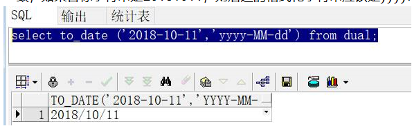
注意,to_date()函数中，第一个参数到底要不要引号？
select to_date(2018-10-11,'yyyy-MM-dd') from dual; --错误
select to_date(20181011,'yyyyMMdd') from dual; --正确
select to_date('20181011','yyyyMMdd') from dual; --正确
select * from users where 1=1 and to_date(BUSSDATE,'yyyyMMdd') >= to_date('20180708','yyyyMMdd'); --正确
select * from users where 1=1 and to_date(BUSSDATE,'yyyyMMdd') >= to_date(20180708,'yyyyMMdd'); --正确
总结：当使用to_date()函数将一个指定格式的字符串抽取出来转换成date对象（sql中的date对象）的时候，第一个输出的目标字符串到底要不要带’’？
当目标字符串完全是数字组成的时候，带不带’’都是一样的，当目标字符串里面存在其他的字符的时候，必须带单引号。如果不带将报错：ORA_01840
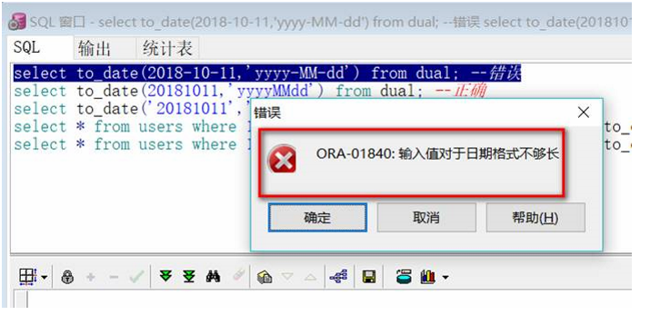
2. to_timestamp()函数
3. count函数
count(column_name)：返回指定列的值的数目（null值不计入）；
举例：select count(column_name) from table_name;
count(*)：返回表中的记录数（是所有的记录总数）；
count(distinct column_name)：返回指定列的不同值的数目（去重复后的字段的数量）；
总结：count(0)=count(1)=count(*):不忽略null值和空值。count(1)的效率比count(*)高。
count(column_name)：忽略null值。
count(null)：永远是0.
4. min函数和max函数
min()，max()和count一样。
count()函数作用于某字段，是取出该字段的所有值然后统计这些值的个数！
min()作用在某字段，是取出该字段的所有值，然后取出最小的那个字段值！
max()作用在某个字段，是取出该字段的所有值，然后取出其中最大的那个字段值！
注意：distinct()在取出重复字段时候，如果其他字段也在查询的记录中，其他字段不重复，则distinct作用的那个字段是不会去重复的，也就是说distinct作用的去重复是根据查询的所有字段同时作为一个整体来判断其是否重复。
如下案例：
(1)先查询 zeh_merge_a 的数据：
其中“大西洋”和“石祥”两个字段分别存在重复。
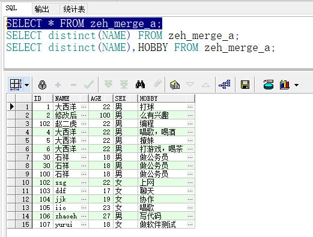
(2)对NAME字段使用distinct函数：
如果单纯对NAME字段进行distinct函数的话，则先查询出所有的NAME字段值，然后去掉其中重复的数据进行显示即可。
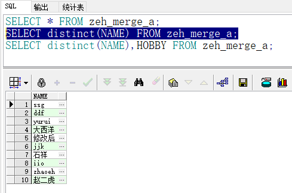
(3)对NAME字段使用distinct函数,同时查询HOBBY字段，其中NAME字段中“大西洋”和“石祥”是有重复的，但是“大西洋”对应的HOBBY字段是没有重复的，结果如下：
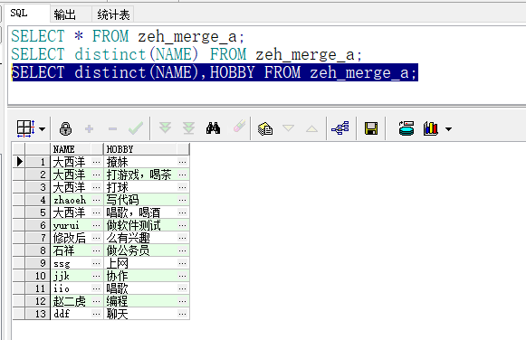
总结：distinct()函数只能作用于一个字段，当SELECT查询的字段中包含其他字段时，distinct()尽管作用于其中的一个字段，但实际上是先SELECT出所有要查询的目标字段数据，然后对目标字段数据整体进行去重复。
从上面案例可以知道，distinct()函数查询出来的数据仍旧是一个表结构，即它查询的结果是一组record。
而min()，max()，count()这些统计函数，则查询时要么查询作用的单个字段，要么要进行分组。
也就是说count()、min()、max()这些函数执行后的结果就是一条数据值，而不是一组值！
测试如下：
先观察merge_a表的全量数据：
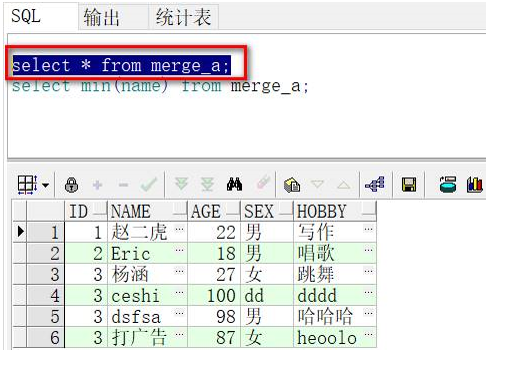
然后使用min(name)取出name中最小的那条记录：
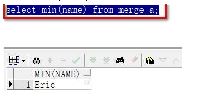
使用max(name)取出name中最大的那条记录：
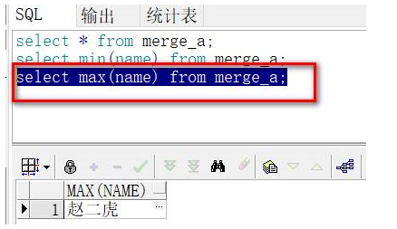
根据Id分组：
下面的方式很常用，常用作根据某字段去重复整条记录：
注意顺序，是先group by，然后对于分组后的每一组数据中的NAME数据求min()。
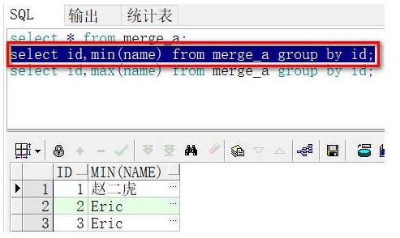
5. distinct短语
distinct()既是一个函数，也是一个短语。
它当做一个函数的时候，()中只能是具体的目标字段，不能是*；
它当做短语的时候，后面紧跟着*或者目标字段。
当distinct用在count()函数之中的时候，只能当做短语来使用：
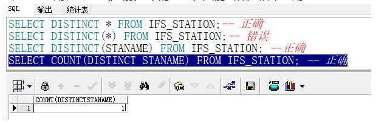
7、 oracle对表空间的增删改查，oracle扩展sql
1. oracle中创建指定表空间，oracle扩展sql
举例：
--执行之前请先确认表空间文件路径以及表空间大小
--创建ESB表空间和流水表空间
CREATE TABLESPACE ESBDATA DATAFILE
'/data/esbdb/esbdata.dbf' SIZE 20480M AUTOEXTEND OFF
LOGGING
ONLINE
PERMANENT
EXTENT MANAGEMENT LOCAL AUTOALLOCATE
BLOCKSIZE 8K
SEGMENT SPACE MANAGEMENT AUTO
FLASHBACK ON;
2. oracel中删除指定表空间和表空间文件，oracle扩展sql
drop tablespace 表空间名称 including contents and datafiles;
举例：
drop tablespace ESBDATA including contents and datafiles;
3. 修改指定用户的表空间配额，oracle扩展sql
注意：quota语句是个子语句，不能单独执行，需要跟在其他语句，比如create user、alter user等语句后执行。
配额：表示该用户只能操作某一个指定的表空间，其他的表空间他没有权限去操作。
举例：
alter user esbdata quota unlimited on esbtrans01;
alter user esbdata quota unlimited on esbtrans02;
alter user esbdata quota unlimited on esbtrans03;
alter user esbdata quota unlimited on esbtrans04;
alter user esbdata quota unlimited on esbtrans05;
alter user esbdata quota unlimited on esbtrans06;
alter user esbdata quota unlimited on esbtrans07;
alter user esbdata quota unlimited on esbtrans08;
alter user esbdata quota unlimited on esbtrans09;
alter user esbdata quota unlimited on esbtrans10;
4. 查询表空间使用情况，oracle扩展sql
举例：
--查看流水表空间使用
select
b.file_name 物理文件名,
b.tablespace_name 表空间,
b.bytes/1024/1024 大小M, --注意M和汉字之间不要存在空格
(b.bytes-sum(nvl(a.bytes,0)))/1024/1024 已使用M,
substr((b.bytes-sum(nvl(a.bytes,0)))/(b.bytes)*100,1,5) 利用率
from dba_free_space a,dba_data_files b
where a.file_id=b.file_id
group by b.tablespace_name,b.file_name,b.bytes
order by b.tablespace_name
8、 oracle对普通用户的增删改查，oracle扩展sql
1. oracle中创建普通用户和密码，oracle扩展sql
--创建ESBDATA用户并设置密码
create user esbdata identified by esbdata2017
完整的sql请参照DB脚本：
--创建ESBDATA用户并授权【注意quota是个子语句，不能单独使用】
--grant子句是给某个用户授予某个对象的某个操作权限的
create user esbdata identified by esbdata2017
default tablespace esbdata --指定默认的表空间
temporary tablespace temp -- temporary tablespace指定临时的表空间
quota unlimited on esbdata
quota unlimited on esbtrans01
quota unlimited on esbtrans02
quota unlimited on esbtrans03
quota unlimited on esbtrans04
quota unlimited on esbtrans05
quota unlimited on esbtrans06
quota unlimited on esbtrans07
quota unlimited on esbtrans08
quota unlimited on esbtrans09
quota unlimited on esbtrans10
quota unlimited on reminder
quota unlimited on mondata;
--password expire;
grant create procedure to esbdata with admin option;
grant create sequence to esbdata;
grant create session to esbdata;
grant create synonym to esbdata;
grant create table to esbdata;
grant create trigger to esbdata;
grant create type to esbdata;
grant create view to esbdata;
grant select on V_$SQLAREA to esbdata;
grant select on V_$SESSION to esbdata;
grant select on V_$LOCKED_OBJECT to esbdata;
grant select on V_$PARAMETER to esbdata;
grant select on V_$PROCESS to esbdata;
grant select on V_$RECOVERY_FILE_DEST to esbdata;
grant select on DBA_FREE_SPACE to esbdata;
grant select on DBA_DATA_FILES to esbdata;
2. oracle中sql删除普通用户，oracle扩展sql
oracle数据库提供了两种sql语句来删除已经创建的普通用户：
drop user esbdata; --直接drop user 用户名，则该用户下必须没有任何对象，一旦有对象，使用drop user 用户名 这个语句就会报错。
drop user esbdata cascade; --drop user 用户名 cascade，这个语句用于该用户名下所有对象，可以将用户名和旗下所有的对象一并删除。
3. oracle中sql修改普通用户密码，oracle扩展sql
一旦第一次创建普通用户时指定了错误的密码，导致没法连接数据库，此时应该使用alter语句修改密码，如下：
alter user esbdata identified by esbdata;
其中esbdata是之前已经创建过的用户，esbdata是新密码。
4. oracle中查看普通用户信息，oracle扩展sql
select * from all_users; --查看当前用户可以管理的用户信息
select * from dba_users; --通过查询数据字典，查询所有的用户信息
select * from user_users; --查看当前用户
9、 oracle对SEQUENCE序列的增删改查，oracle扩展sql
1. create sequence语法，oracle扩展sql
create sequence seqname
increment by 数字 --by 1就是每次递增1个，by -1就是每次递减1个
maxvalue 数字 --序列最大值，默认最大为27个9
minvalue 数字 --序列最小值，默认为1
start with 数字 --序列从哪个值开始，默认为1
cache 数字 --缓存序列个数，默认为20，先取一部分序列放置缓存中，提升性能，缺点是当数据库宕--机时，缓存中的序列号可能不连续。可以
--设置nocache保证不使用缓存机制。
--这个值影响序列的开始值呢，比如这个值是10，说明每次设置序列值的时候，都会将当前的值放进这个缓存中，占用位置，此时再
--去查看序列定义，会发现开始值变成了11，当把10个序列塞满，加入第11个序列时候，开始值将变成21…
cycle --循环，导致最大值后，从最小值重新开始生成序列号
order --保证按顺序申请序列号。默认是noorder。
SEQUENCE表示序列号。
insert into tablename[(列名1,列名2,列名3,…)] values (值);
如上：insert数据时，如果该表中有字段id想要用来表示序列，那么就可以直接向该字段插入：序列名称.NEXTAL或者序列名称.CURRVAL。即：
insert into tablename[(id,列名2,列名3,…)] values (序列名称.NEXTAL,””,””,….);
sequence是序列号的意思，每次取的时候它会自动递增或者递减。sequence与表没有从属关系，与表一样属于用户。只要你通过序列名称.NEXTAL取它的下一个值了，那么它的值就会自动按照规则自增或者自减！
首先用户要有create sequence或者create any sequence的权限。
定义好sequence后，就可以使用currvar和nextvar取得值。
currvar：返回sequence的当前序列号
nextvar：返回sequence的下一个值
如下：
select myseq.nextvar from dual; --查找myseq的下一个值
--新建立的序列必须执行这个语句将nextvar进行初始化
--否则currvar将无法使用
select myseq.currvar from dual; --查找myseq的当前值
举例1：
create sequence myequence
increment by 1 --每次加1个
start with 1 --从1开始计数
nomaxvalue –不设置最大值
nocycle –一致累加，不循环
cache 10 –缓存10个序列号，默认值是20个
noorder --在并发读取时，不保证按顺序取值
举例2：
create sequence mysequence
minvalue 1 --最小值为1
increment by 1 --递增1
start with 1 --从1开始计数
maxvalue 9999 --设置最大值为9999
cycle --循环，到达9999后从最小值重新计数
cache 100 --缓存100个序列号
2. drop sequence，oracle扩展sql
drop sequence myseq; --删除序列myseq
3. alter sequence，oracle扩展sql
首先用户必须拥有alter any sequence的权限才能修改sequence。
alter能够修改的sequence参数值，除了start with指定的参数值外，其他的皆能修改。
如果要修改start with的参数值，必须drop sequence之后再重新create sequence。
举例：
alter sequence myseq maxvalue 99999999999； --修改序列myseq的最大值为99999999999
alter sequence myseq cache 10; --修改序列myseq的缓存序列数为10
4. 可以使用sequence的场景，oracle扩展sql
(1)不包含子查询、snapshot、view的select语句
(2)insert语句的子查询中
(3)insert语句的values中
(4)update语句的set中
举例：
insert into student(id,name) values(seq.nextvar,’zhaoerhu’);
注意：第一次nextvar返回的是初始值，随后的值按照increment by后面设置的递增或者递减数设置。currvar总是返回当前sequence的值，但是只有在第一次nextvar初始化之后（初始化就是查询一下nextvar）才能使用currvar，否则会报错。
案例如下：
（1）创建一个序列，sequence：指定缓存值为10，注意观察后面操作
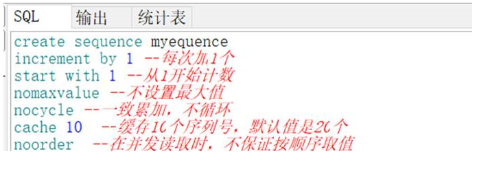
（2）此时没有初始化nextval的话，直接查询currvar将报错
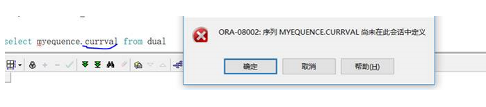
（3）先初始化nextval的值（查询一次就初始化了）
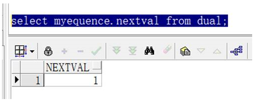
（4）观察该序列已经从11开始了，因为它的缓存是10
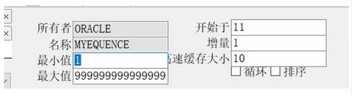
（5）通过操作，让序列自增到11，再观察它的开始值
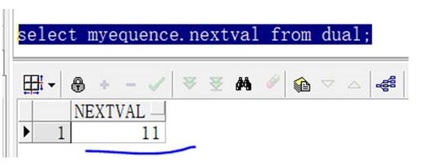
（6）缓存10个塞满之后，开始值就变成21了
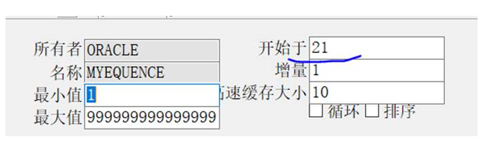
10、 oracle中设置job自动执行，oracle扩展sql
使用sys用户登录sqlplus后，如下所示：
SQL> show parameters job; --显示job的参数配置
NAME TYPE
------------------------------------ ---------------------------------
VALUE
------------------------------
job_queue_processes integer
0 --参数为0的话，说明job不会自动执行的
SQL> shutdown transactional; --关闭数据库
Database closed.
Database dismounted.
ORACLE instance shut down.
SQL> startup mount; --重启数据库
ORACLE instance started.
Total System Global Area 1603411968 bytes
Fixed Size 2213776 bytes
Variable Size 402655344 bytes
Database Buffers 1191182336 bytes
Redo Buffers 7360512 bytes
SQL> alter system set job_queue_processes=1000 scope=spfile; --修改该参数为非0的数字，一般设置为1000;
System altered.
SQL> shutdown immediate; --强制关闭数据库;
Database closed.
Database dismounted.
ORACLE instance shut down.
SQL> startup; --重新启动数据库;
ORACLE instance started.
Total System Global Area 1603411968 bytes
Fixed Size 2213776 bytes
Variable Size 402655344 bytes
Database Buffers 1191182336 bytes
Redo Buffers 7360512 bytes
Database mounted.
Database opened.
SQL> show parameters job; --重新查看job的参数，已经变成1000;
NAME TYPE
------------------------------------ ---------------------------------
VALUE
------------------------------
job_queue_processes integer
1000
SQL> quit;或者exit; --退出sqlplus命令行控制台窗口;